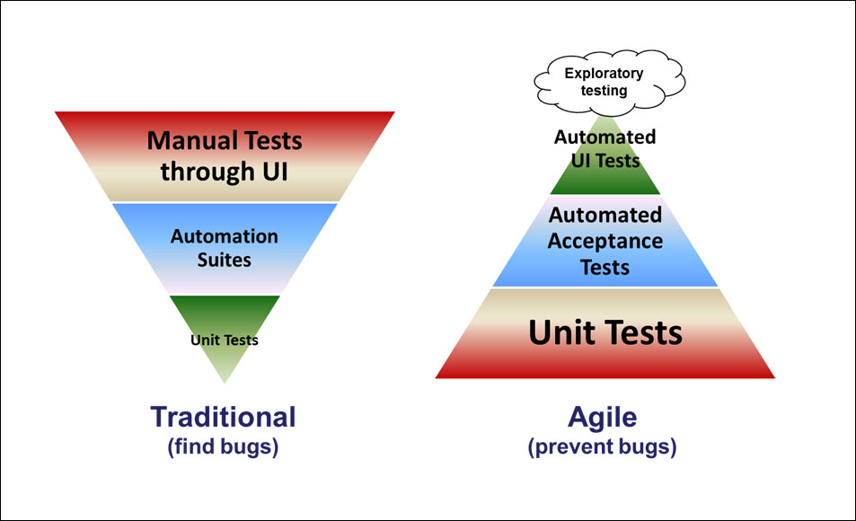

## Architecture Vision
### and Development Practices
### Systems Team Goals
- Support reliability in Our Daily Bread's web infrastructure
- Equip developers with tools and systems to achieve their teams' goals
- Train teams to take ownership of their own application architecture
- Build automated processes wherever possible to free up more time for development
### QA and Testing
Teams will decide on the exact Quality Assurance process that they will enact with their team.
### QA and Testing
These things should be the same across teams:
- When we write user stories, they should also have test cases
- These test cases should be able to be performed manually or using an automated tool
- QA and testing is the responsibility of the team as a whole, especially with the lack of dedicated QA engineers
- Developers should have another developer verify any front end work before passing to desgin
### Manual QA Process
1. Developer pulls changes locally (or tests on beta)
2. Developer compares designs in Abstract with front end in browser (font-size, padding, etc.)
3. Developer ensures site works properly on difference screen sizes, and different browsers.
### Manual QA Process
*(continued)*
4. Developer follows "Manual Testing Scenarios" and ensures that it meets the Acceptance Criteria
5. If changes are needed, Developer comments on Jira ticket, and moves into "Todo" column
6. If no changes are needed, developer pass on to designs to run through their QA process.
*We want to ensure our designs match before the designers take a look at it*
## Design QA Process
- Design will review layout and styling of type and page elements at varying widths, breakpoints, and devices that we have access to and compare against Abstract.
- Review transitions, animations, and load times and experiences as needed depending on the project or ticket.
- Test forms, buttons, and user feedback mechanisms (tool tips, modals, invalid/incomplete form fields, etc…) for correct styling on states and responses.
- Design testing is best performed on full pages or page sections. Designers’ eyes are trained to look at the part in relation to the whole so we are more prone to miss something if we are doing QA on a small portion of a page or an individual element.
### Manual vs Automated Testing
### Why Invest in Automated Testing?
- Humans are imperfect
- Saves stakeholder time, because there is less manual work to be done
- Ensures stability of system, because all tests are run when one thing changes
## Manual vs Automated Testing
### Why Invest in Automated Testing?
[The Old Way](https://docs.google.com/spreadsheets/d/1RHq-UcEbtVVswJKs87nuVwuzCQVSCQsXd85FRdLr5B0/edit#gid=0)
[The New Way](https://dashboard.cypress.io/#/projects/4b7344/runs)
### Manual vs Automated Testing
- It will take a while for us to get used to Test Driven Development
- Featues will take longer to accomplish
- As we get used to it, we will get faster
- We will save time by have cleaner and more thought through code
Automated Testing
Each team will decide on what tools and practices will best fit with the platforms they are developing on.

### Front end
For front end development, we have decided to use Cypress.io, because it is able to be a single framework for end-to-end, integration, and unit tests.
Cypress also has a dashboard that show the status of our tests, as well as generating screenshots and videos that show how the test ran.
### Lambda Functions
For our Node.js Lambda functions, we will be using Mocha to do testing locally. This makes sense because Cypress uses Mocha internally.
### Magento
For PHP testing, our Magento team will rely on Magento's native framework for testing, which utilizes PHPUnit.
The Code Bread team has purchased a course on testing in Magento and will continue to develop this process.
We would also like to rely on Cypress for testing the front end-facing parts of our Magento sites.
### WordPress
We are still in the process of determining how to best do testing with WordPress.
It will likely be a combination of PHPUnit and Cypress.
We are also going to implement a CodeSniffer into our build process, so our code is statically analyzed before it deploys. This should catch a lot of syntax errors.
### Main takeaways
The main takeaways from testing and QA is:
- we are going to rely more on automated processes
- we will consider QA a team effort and part of the development process
- we commit to use Cypress where we can, to give a great experience for developers and testers
## Microservices
### More than just a buzz word
### Definition of Micro Service
A loosely coupled service that has its own data model and can interact with other services via an API.
A primary goal of our systems team will be to build a path for replacing our WordPress sites with a micro service architecture.
This will allow us to:
- have improved performance by designing our APIs around *our* data
- develop more rapidly, because we don't have to worry about what our changes will do to other parts of the application
- reduce costs significantly by utilizing Amazon's pay-per-use pricing model.
The ODBx project has gotten us started down the road of using microservices. The drag-and-drop content on the home page is all served using a micro service API.
For this project, we were learning as we went.
Our goal on the systems team is to build those services into a version control repository, and apply DevOps practices to development of these services.
### DevOps with Microservices
We have a single project (tentativley named "crouton"), that stores all the code of our different microservices.
We've worked to build a CI/CD system, where pushing to this repository will automatically deploy these changes to our APIs.
We're relying on the Serverless Framework to build the infrastructure for our services, using templates.
### Microservices Goals
- Update our ODBx services to use the Serverless framework within the Crouton project
- Improve our DevOps practices with automated test, better deployment, and A/B Testing
- Teach our teams how to use the Serverless framework to build microservices for their future development
The main takeaway is that any new API development should be built using our Serverless tools.
## Non Functional Requirements
### What are NFRs
These are requirements that every system we build should adhere to, even though the end-user doesn't necessarily see the results.
They are to ensure quality, stability, security, and reliability.
#### Here are some basic NFRs starting this Program Increment
- Front end initial response time should be less than 3 seconds
- API/Servers should be able to automatically and manually scale to match load
- Logs should be rotated regularly on servers, or set to expire in CloudWatch
*(continued)*
- If running server is terminated/fails, site should be able to recover on its own
- Lambda functions should use version control and Serverless Framework, CloudFormation, or similar tool
- Configurations & changes should always be baked into a deployment, i.e. if a new server spins up, it should have the same configuration
### What have we been doing lately?
Here are some things that we're doing architecturally to improve our systems:
- Switch our WordPress instance type to the t3 family to use CPU bursting when we hit peak traffic
- Switched all WordPress sits into our PCI Compliant environment, for better security
- Are working on optimizing images in S3 buckets for faster load times, lower costs
### What have we been doing lately?
continued...
- Using Elastic File System to store our configuration files across servers
- Added Status Cake to all of our sites to notify us via Slack and email in case of downtime
- Hired a new developer to work with our infrastructure!